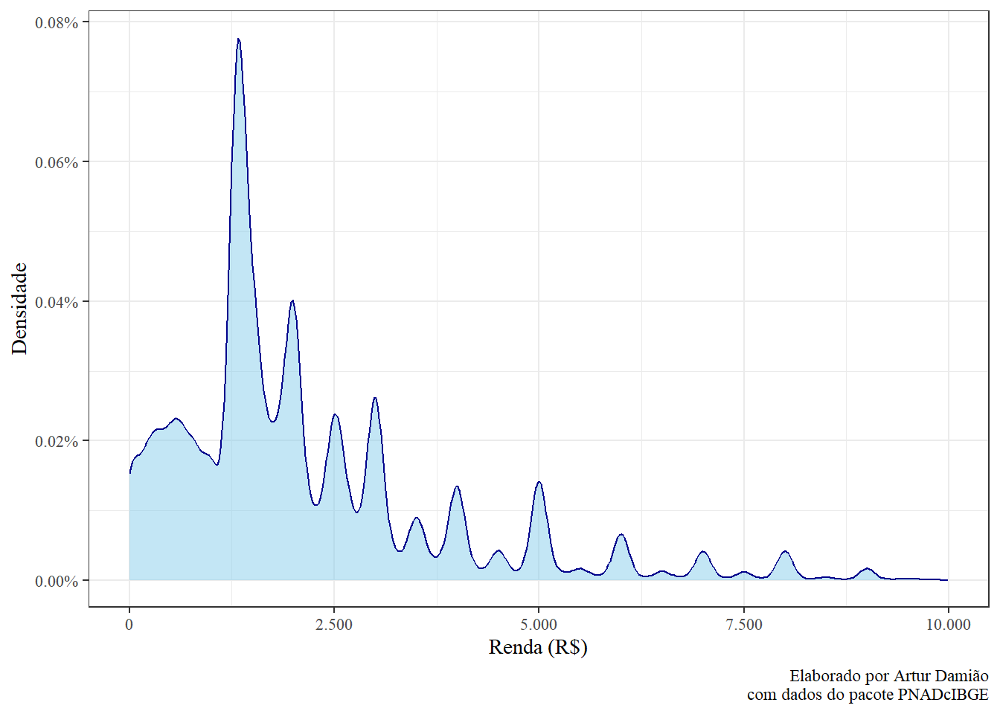
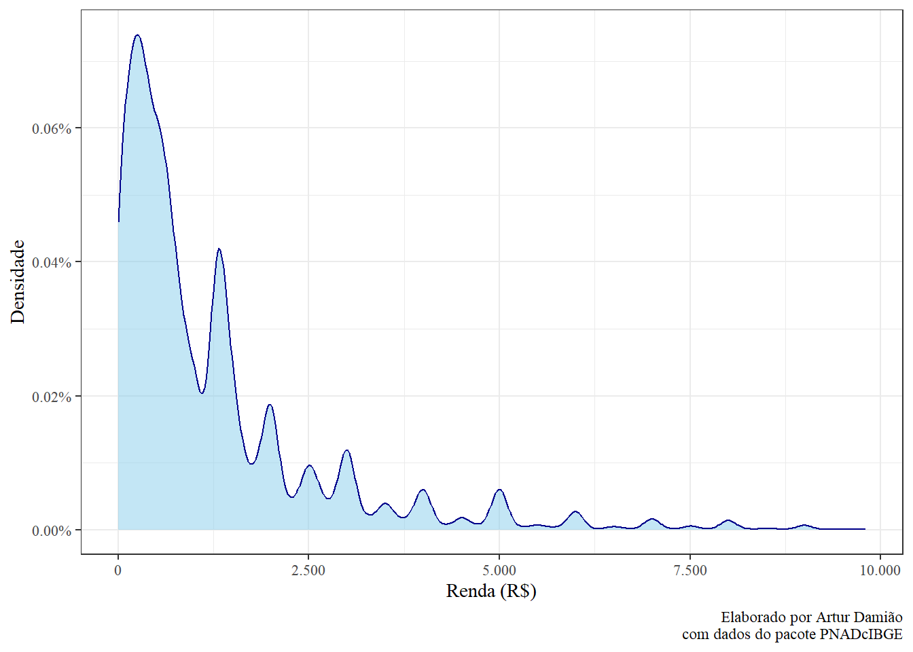

library(PNADcIBGE)
library(tidyverse)
library(tidylog)
library(knitr)
options(scipen = 999)01-lista
Ambientação
1 Baixando o banco de dados PNADc
library(PNADcIBGE)
#importe os dados de interesse através da função "get_pnadc"
dados_pnad <- get_pnadc(
year = 2023,
quarter = 4,
design = FALSE,
savedir = tempdir()
)2 Limpando a base de dados
library(tidyverse)
library(tidylog)
dados_pnad <- dados_pnad %>%
select(Ano, Trimestre, UF, V2007, VD4020, VD4035)
#renomeando as variáveis:
dados_pnad <-
dados_pnad %>%
rename(
sexo = V2007,
renda = VD4020,
horas_trabalhadas = VD4035
)3 Estatística descritiva dos dados
A renda média é de R$2828.87.
A variância da renda é de R$1.9570671^{7}.
A renda média dos homens é R$3036.15, enquanto a das mulheres é de R$2546.46. É uma diferença de R$489.69.
A renda média em cada estado brasileiro está representada na tabela abaixo:
dados_pnad |>
dplyr::select(UF, renda) |>
dplyr::group_by(UF) |>
dplyr::summarise(
renda_media = mean(renda, na.rm = TRUE)
) |>
dplyr::arrange(desc(renda_media)) |>
kable(
digits = 2,
col.names = c("UF", "Renda Média (R$)")
)| UF | Renda Média (R$) |
|---|---|
| Distrito Federal | 5061.16 |
| São Paulo | 3613.32 |
| Rio de Janeiro | 3481.70 |
| Rio Grande do Sul | 3471.41 |
| Santa Catarina | 3410.94 |
| Mato Grosso | 3355.65 |
| Paraná | 3249.76 |
| Mato Grosso do Sul | 3184.05 |
| Goiás | 3179.70 |
| Espírito Santo | 2945.18 |
| Amapá | 2806.51 |
| Minas Gerais | 2783.37 |
| Rondônia | 2669.75 |
| Tocantins | 2659.72 |
| Roraima | 2568.82 |
| Acre | 2406.40 |
| Rio Grande do Norte | 2360.08 |
| Paraíba | 2297.15 |
| Pará | 2187.96 |
| Amazonas | 2109.68 |
| Pernambuco | 1985.52 |
| Piauí | 1946.79 |
| Alagoas | 1925.60 |
| Sergipe | 1916.97 |
| Bahia | 1808.20 |
| Ceará | 1733.27 |
| Maranhão | 1510.35 |
- A covariância entre renda e o número de horas trabalhadas é 9186.64. Este valor, sozinho, nos diz pouco. A correlação entre renda e horas trabalhadas é de 0.15.
4 Linearidade da esperança
- A equação é \[\mathbb{E}[aX + bY] = a \times \mathbb{E}X + b \times \mathbb{E}Y\], onde1:
dados_filtrados <- dados_pnad |>
dplyr::filter(!is.na(renda) & !is.na(horas_trabalhadas))
x <- dados_filtrados$renda
y <- dados_filtrados$horas_trabalhadas
a <- 2
b <- 3Logo2:
# Lado esquerdo: E[aX + bY]
esquerdo <- mean(a*x + b*y)
# Lado direito: aE[X] + bE[Y]
direito <- a*mean(x) + b*mean(y)
all.equal(esquerdo, direito)[1] TRUE- O exercício demonstrou que a esperança (\(\mathbb{E}\)) é uma função linear, considerando duas variáveis aleatórias (\(X\) e \(Y\)) e dois termos constantes (\(a\) e \(b\)).
5 Probabilidade condicional
- A Figura 1 abaixo apresenta o gráfico de densidade para a variável de renda.
dados_pnad %>%
filter(renda < 10000) %>%
ggplot(aes(x = renda)) +
geom_density(
colour = "darkblue", # cor da linha
fill = "skyblue", # cor do preenchimento
alpha = 0.5 # transparência do preenchimento
) +
scale_x_continuous(labels = scales::comma_format(
big.mark = ".", decimal.mark = ",")) +
scale_y_continuous(labels = scales::label_percent(scale = 100)) +
labs(
x = "Renda (R$)",
y = "Densidade",
caption = "Elaborado por Artur Damião\n com dados do pacote PNADcIBGE"
) +
theme_bw(base_family = "serif")

O gráfico 1 apresenta que aproximadamente 8% do total de pessoas que ganham até 10 mil reais recebe menos de R$2.500,00.
- Probabilidade de receber \(\geq\) a R$1.000,00 ou \(\leq\) a R$2.000,00.
probabilidade_renda <- dados_pnad %>%
filter(renda < 10000 & !is.na(renda)) %>%
summarise(
total_casos = n(),
casos_possiveis = sum(renda >= 1000 & renda <= 2000),
probabilidade = casos_possiveis/total_casos
)Considerando um total de casos de 191253 observações, dos quais 84059 são casos possíveis, a probabilidade é de 43.95%.
- Gráfico de densidade da renda dado que as horas trabalhadas
dados_pnad %>%
filter(renda < 10000 & horas_trabalhadas <= 20) %>%
ggplot(aes(x = renda)) +
geom_density(
colour = "darkblue", # cor da linha
fill = "skyblue", # cor do preenchimento
alpha = 0.5 # transparência do preenchimento
) +
scale_x_continuous(labels = scales::comma_format(
big.mark = ".", decimal.mark = ",")) +
scale_y_continuous(labels = scales::label_percent(scale = 100)) +
labs(
x = "Renda (R$)",
y = "Densidade",
caption = "Elaborado por Artur Damião\n com dados do pacote PNADcIBGE"
) +
theme_bw(base_family = "serif")

- \(\mathbb{P}(1000 < X < 2000 | Y \leq 20\)
probabilidade_horas <- dados_pnad %>%
filter(renda < 10000,
!is.na(renda),
horas_trabalhadas <= 20) %>%
summarise(
total_casos = n(),
casos_possiveis = sum(renda > 1000 & renda < 2000),
probabilidade = casos_possiveis/total_casos
)Considerando um total de casos de 28462 observações, dos quais 5266 são casos possíveis, a probabilidade é de 18.50%.
6 Esperança condicional
- \(\mathbb{E}[X | 10 \leq Y \leq 20]\)
# 1. E[X | 10 <= Y <= 20]
esperanca_cond_1 <- dados_filtrados |>
filter(horas_trabalhadas >= 10, horas_trabalhadas <= 20) |>
summarise(esperanca_condicional = mean(renda)) |>
pull()
esperanca_cond_1[1] 1348.168A média da renda das pessoas que trabalham entre 10 e 20 horas é R$1348.17.
- \(\mathbb{E}[X | Y \leq 20]\)
# 2. E[X | Y <= 20]
esperanca_cond_2 <- dados_filtrados |>
filter(horas_trabalhadas <= 20) |>
summarise(esperanca_condicional = mean(renda)) |>
pull()
esperanca_cond_2[1] 1562.967A média da renda das pessoas que trabalham até 20h é de R$1562.97.
7 Questão extra/optativa
- Mostrando que \(\mathbb{E}[7 \times X_i - 7 \times \bar{X}] = 0\):
Essa propriedade diz que a média dos desvios de cada ponto em relação à média geral é sempre zero.
\[ \begin{aligned} \mathbb{E}[7X_i - 7\bar{X}] &= \mathbb{E}[7X_i] - \mathbb{E}[7\bar{X}] & \text{(pela linearidade)} \\ &= 7\mathbb{E}[X_i] - 7\mathbb{E}[\bar{X}] & \text{(retirando a constante)} \end{aligned} \]
A esperança de uma observação individual, \(\mathbb{E}[X_i]\), é a média populacional, que denotamos como \(\mu\). A esperança da média amostral, \(\mathbb{E}[\bar{X}]\), também é a média populacional \(\mu\). Portanto: \[\begin{aligned} 7\mathbb{E}[X\_i] - 7\mathbb{E}[\bar{X}] &= 7\mu - 7\mu \\ &= 0 \end{aligned} \]
Essa é a prova teórica.
No R, a esperança (\(\mathbb{E}\)) é calculada pela função mean() sobre os dados da nossa amostra. A média populacional (\(\mu\)) é estimada pela média amostral (mean(x)).
options(scipen = 999)
# Nosso X
x <- dados_filtrados$renda
# Nossa média amostral
x_barra <- mean(x)
resultado_1 <- mean(7 * x - 7 * x_barra)
resultado_1[1] -0.000000000003260755Nosso resultado é \(0\).
- Exemplificando a veracidade da equação: \[\mathbb{E}[(X_i - \mathbb{E}[X_i])^2 = \mathbb{E}[{X_1}^2] - (\mathbb{E}[X_i])^2\]
No R:
options(scipen = 999)
# Nosso X
x <- dados_filtrados$renda
# Lado esquerdo:
## E[X]
media_x <- mean(x)
## Média dos desvios ao quadrado
lado_esquerdo <- mean((x - media_x)^2)
# Lado direito:
## E[X^2]
media_dos_quadrados <- mean(x^2)
## ((E[X])^2)
quadrado_da_media <- (mean(x))^2
lado_direito <- media_dos_quadrados - quadrado_da_media
# Logo,
all.equal(lado_esquerdo, lado_direito)[1] TRUE